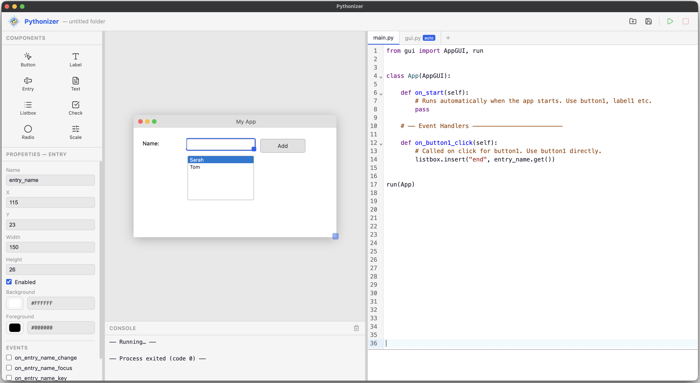

Design Canvas
Place and tweak widgets in seconds with live property controls.
Visual Builder for tkinter
Pythonizer was created to address a gap in pedagogical tools. It enables learners to design visually while gaining an understanding of how the generated tkinter code is structured.
Place and tweak widgets in seconds with live property controls.
Edit logic while Pythonizer keeps your generated GUI class in sync.
Perfect for demos, assignments, and helping beginners move faster.
Pythonizer keeps generated UI code separate so learners can focus on program logic.
my_project/
|- project.json # widget layout and window settings
|- gui.py # fully auto-generated tkinter UI class
`- main.py # entry point to focus on handlers and logicIn practice, main.py is the file students work in. gui.py contains the complete auto-generated tkinter structure and is regenerated from the canvas. Other regular Python files can be added as needed.

For pedagogical clarity and ease of use, the number of available components has been intentionally limited. This ensures a more focused learning experience and helps users better understand the underlying concepts. However, the tool can be extended if needed—feel free to get in touch to discuss additional components or specific requirements.